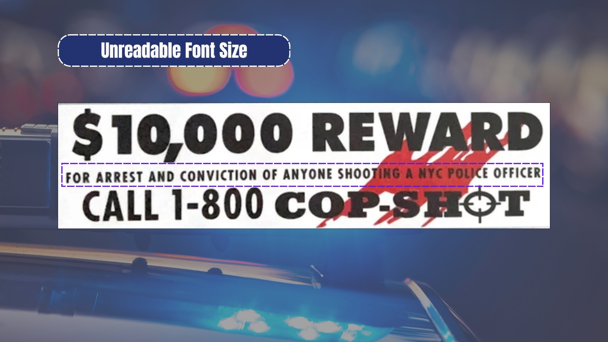
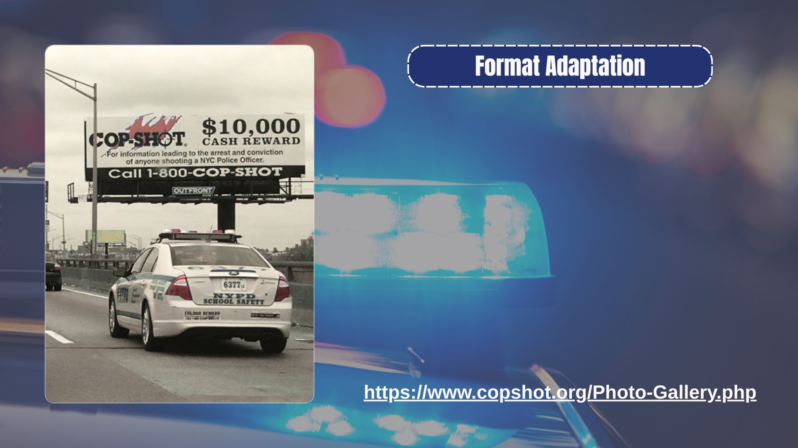

Violent symbols like the crosshair "O" and the red blood spatter give the impression that the police is looking for revenge rather than justice.

The small font size makes the fine print unreadable in a bumper sticker. The hirearchy then becomes umbalanced, with the large sum of money and phone number taking over most of the design and obscuring the more violent elements.

The same design is used on a billboard and a bumper sticker. While the design is more effective on a large scale, once it is reduced to the size of a sticker, the message gets lost.